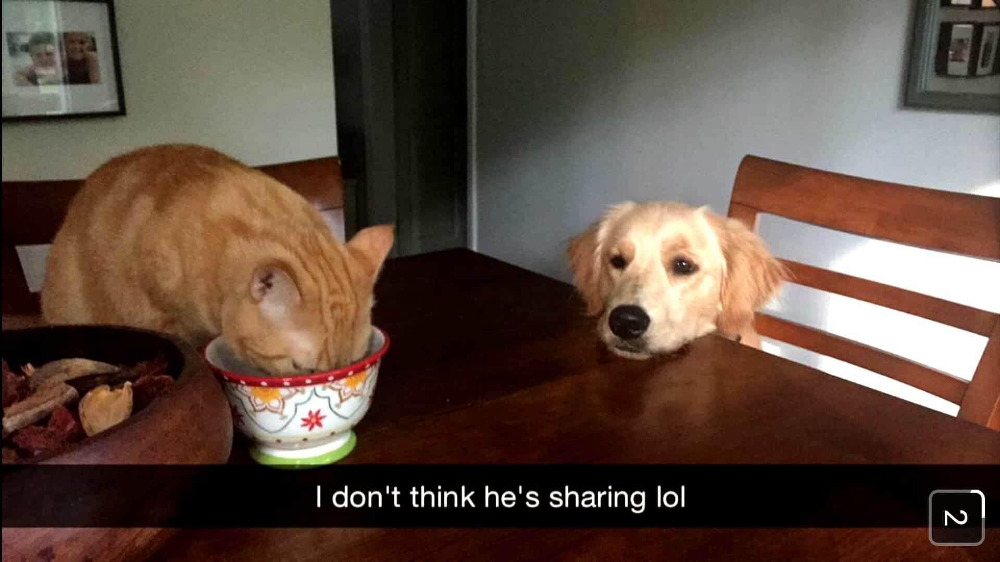

< < < Back
3 Sobering Facts About Friendship You Need To Know – Return Of Kings
Friendships mean a lot less now than they used to. A combination of technology, material prosperity, increased leisure time, and half-dead or zombie-like cultural loyalties means that the average person living, working or socializing with those around them has far less individual value than in times past. For a start, we each know more people than our parents and grandparents. That immediately puts less of an emphasis on strong, lasting ties with friends and others.
The crux of this article is not that all your current friends will behave in the ways I will explain. But expect large numbers of them to if given the chance. Optimism is actually your enemy in this regard. It is better to be aware of the negative traits found in many people roaming this Earth. Then you are unsurprised when they act on these impulses. It also makes you value your true friends all the more.
1. Make yourself known or even many “close” friends will disappear
In 2012, I set about trying to reinvent myself and my life. I was still very young. In a few years after turning 18 I had already traveled much of the world. But I needed something different. Countless whirlwind romances and one night stands from Poland to the Atlantic Ocean needed to be supplemented or redefined by something much more. And I certainly did not need to document everything I was doing in Europe in meticulous detail on Facebook.
This obviously did not bode well with many of my present friends in Australia. We lost touch, depending on the person, for something between 9 and 15 months. When I resurfaced back home a few times, even though they were aware I had been traveling, many had apparently decided the friendships were over. The best way to determine this were Facebook deletions, but a number of other signs made the situation clear, too.
Yet these were the same people I had broken bread with in the past on trips of our own. They had sought my advice on girls, study, work, and life. A number had left their most treasured possessions, their wallets, their secrets, and, often enough during our adventuring, their livelihoods in my hands. And they did all this despite having plenty of other people they could call on instead.
In the case of the men who had evidently parted ways with me, some I had never seen cry before could and would cry in my presence over same family or female-related loss, or another sort major crisis they faced. They knew I would give them the honest, glaring truth, but they cried all the same. For the women, I had had sex with a number of them over a long period of time in the past. But it was my extended absence, not the absence of sex between us, that seemed to have set off the end of our friendships.
So what prompted this from people I had previously trusted and who had trusted me? In reality, if I had had the time to decide who was most valuable in my life and who was not, I might have consciously erased a few of them from my own life, whether mentally, online or in practical terms when I returned home. Jealousy was another potential factor. I might have disappeared, but people knew what I was doing and could have guessed based on my past jet-setting behaviors.
Undoubtedly, some of the women I had had sex with obviously benefited from trying to forget our liaisons when they found long-term partners. These are all possibilities and probably explain either at least half of the ended friendships or at least half the reasons for each ended friendship.
The fact remains, though, that friendships are most often artificial, ephemeral constructions. Gone are the days when a person could leave a village, town or district of a city for years at a time and come back with the comfortable expectation that their old social relations would either be the same or could be reinvigorated very quickly. Do not close yourself off from the idea that this loyalty can still develop. It can. But the chances are much smaller than they used to be and because of the tyranny of time, with only 24 hours in a day, there are limits to how many people you can cultivate this sort of lasting bond with. Friendship is much more of a muscle than it used to be: use it or lose it.
2. Your “friends” will not assume responsibility for an unused or broken down friendship
Everyone has a phone. Everyone has email. Everyone has Facebook. Whilst this is not a substitute for face-to-face contact, the excuses for either party to not keep a friendship going are slim to none. Needless to say, however, you will be blamed when a friendship starts to atrophy and then die off.
It was you who did not stoke the fires of their self-importance, it was you who did not invite them for coffee, it was you did not wish them happy birthday. It does not matter if they forgot to do all that or more when it comes to you. In an almost identical fashion to girls blaming men for a stagnating conversation or floundering sexual build-up when the female is actually the problem, current friends are apt to blame you later on when the friendship has not been kept alive.
Then we have the specter of behaviors like flaking, which are frequently used as a pretext to end or gradually shake off a current friendship. Flaking is easy for the flaker but very often infuriating for the flaked. If your friend bailed on you last week, do not expect sympathy from them when you have to do the same thing this week, regardless of any excellent reason for doing so. It does not matter that your friend is as unreliable as a square peg in a round hole; you will most likely be blamed and pilloried, even if silently, for doing the same thing they did.
When the going really gets tough, this is even more true. Hard times call for better friends and this requires more effort and sacrifice from them. The abundance of friends you had in prosperous or more casual periods quickly chisels down to a smaller group, unless you somehow bucked the trend that afflicts or could easily afflict most people’s social lives. As opposed to demonstrating true friendship, a friend who balks at you can make all manner of rationalizations about why they could not be there for you. Do not expect them to feel bad or take responsibility. It is likely that only a few will go above and beyond.
3. Your biggest favors will either not be remembered by friends or will look far less generous later on
Did you spot one of your closer friends $1,000 when they lost their job or offered to share your place with them when they suddenly became a homeless student? Five years from that time, there is a good chance the friendship will either be a shadow of its former self or a deadweight that makes both of you cringe every time you see each other randomly in public. So, welcome to the real world then: going out of your way to help someone is rarely remembered down the track or can result in you being spurned.
Paradoxically, some erstwhile friends are actually less likely to want to associate with you because you helped them. Even if they, not you, remember your help, it can hang heavily over their heads. A vague future obligation they feel they have towards you can easily become an excuse to leave you behind. They expend far less energy by ending a friendship at the point at which you have given them more than they will ever give you.
Plus, friendships are invariably less sexualized versions of relationships. Just as sleeping with a girl generally reduces her overall value to you, getting something from someone can alter the previous dynamic between the giver and receiver. Oftentimes, the recipient rightly or wrongly sees themselves as being the dominant, more valuable one.
As humans we are social beings but social for one main reason: survival. Just because we have gone past subsistence societies (for now) does not mean that the motivation of self-interest is absent. It is almost always there. People may pay lip service to showing temporary gratitude, but once enough time has elapsed, you may very well become expendable for those you went out of your way to assist. To this end, value is more of an ongoing calculation than a cumulative one. Good deeds two years ago count for less than the absence of favors now, especially as the human mind, even one of a friend, is prone to selective memory.
You’re probably guilty of this, too

In this article I have deliberately tried to make myself look like the victim of opportunistic false friends. But there’s a catch: I have acted in the same ways myself. Usually without realizing it, I just abandoned friends I did not need as much anymore. After Natalya taught me Russian for five months, I found myself talking a lot more with her friend Ekaterina. When Tom started working night shifts and could not go clubbing as much anymore, we hardly met at other times because I could club with Jason and George instead. I have dished out, sadly, as much of this, if not more, than I have received.
Nonetheless, becoming a social “pessimist” has ironically made me happier. As the Stoic philosopher Seneca noticed, it is the optimists who are often engulfed in the most anger. They expect the best from people, only to be disappointed. Whilst I do not expect the worst from people, I am wise enough (which only means I have learned the lesson a billion times) to figure out that fully 40-60% of the people I now call my friends will be either outright duds or meaningless to me in five years’ time.
Keep searching for excellent friends, however. They are there. Last year Roosh learned this firsthand. Having been hunted down by rabid and plain violent SJWs in Canada, a number of individuals stood by him as he stood up for men and free speech, including on one occasion that involved a mob. These kinds of comrades may be rare, but you can always find ones like them. In the meantime, learn to enjoy your less tested friendships, but do not expect too much of them.
Read More: True Friendship Is About Tough Love